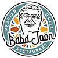
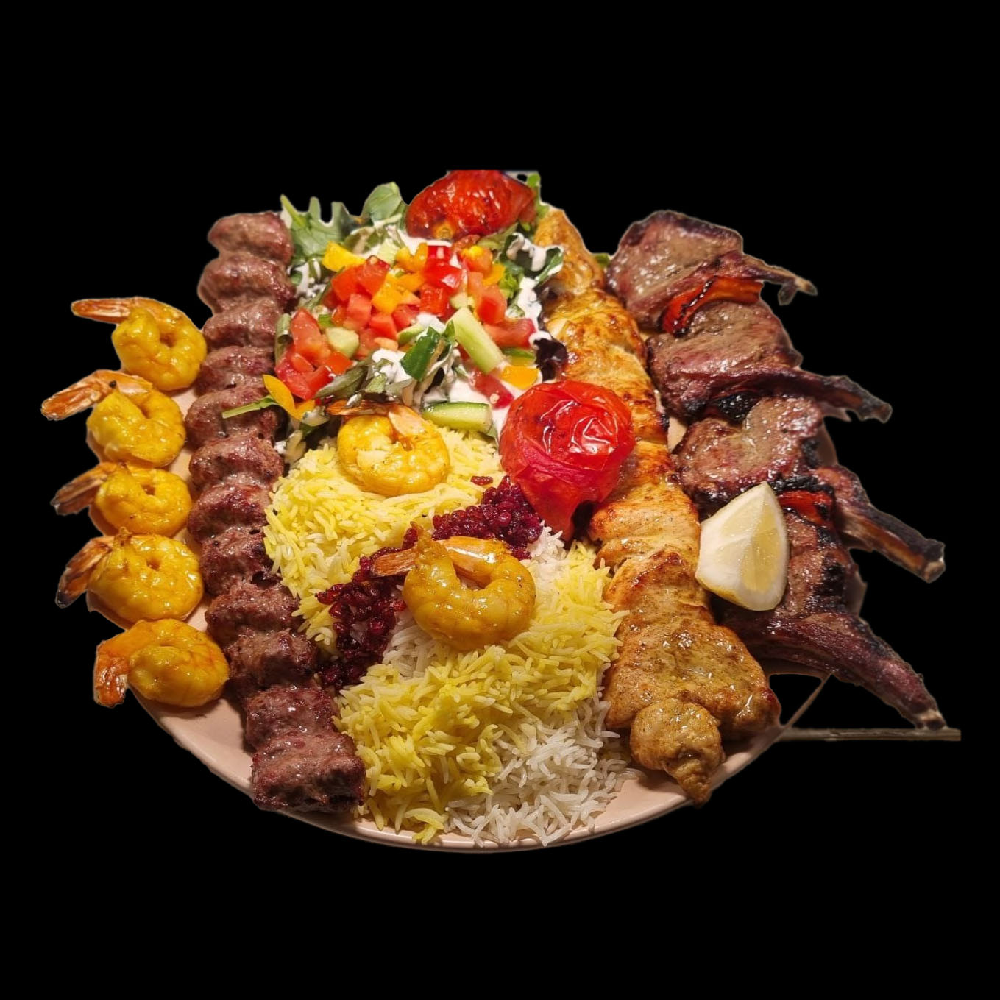
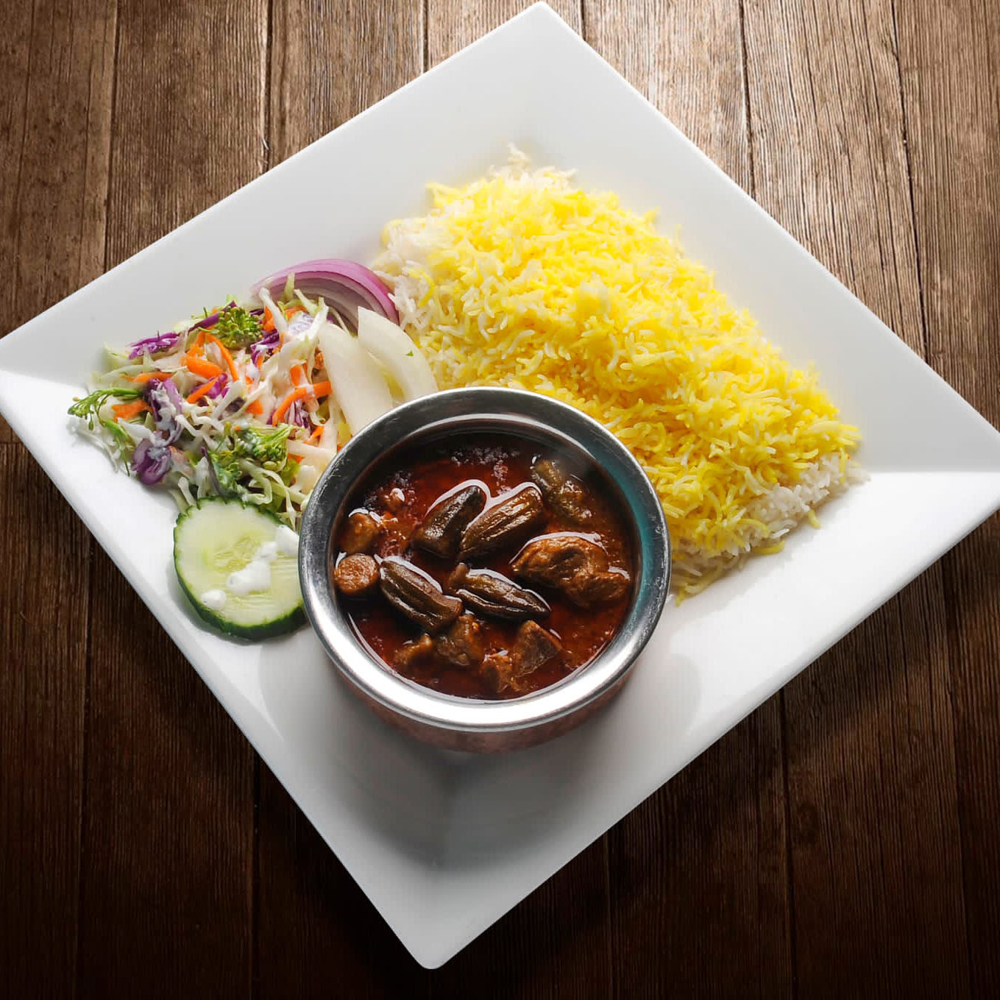
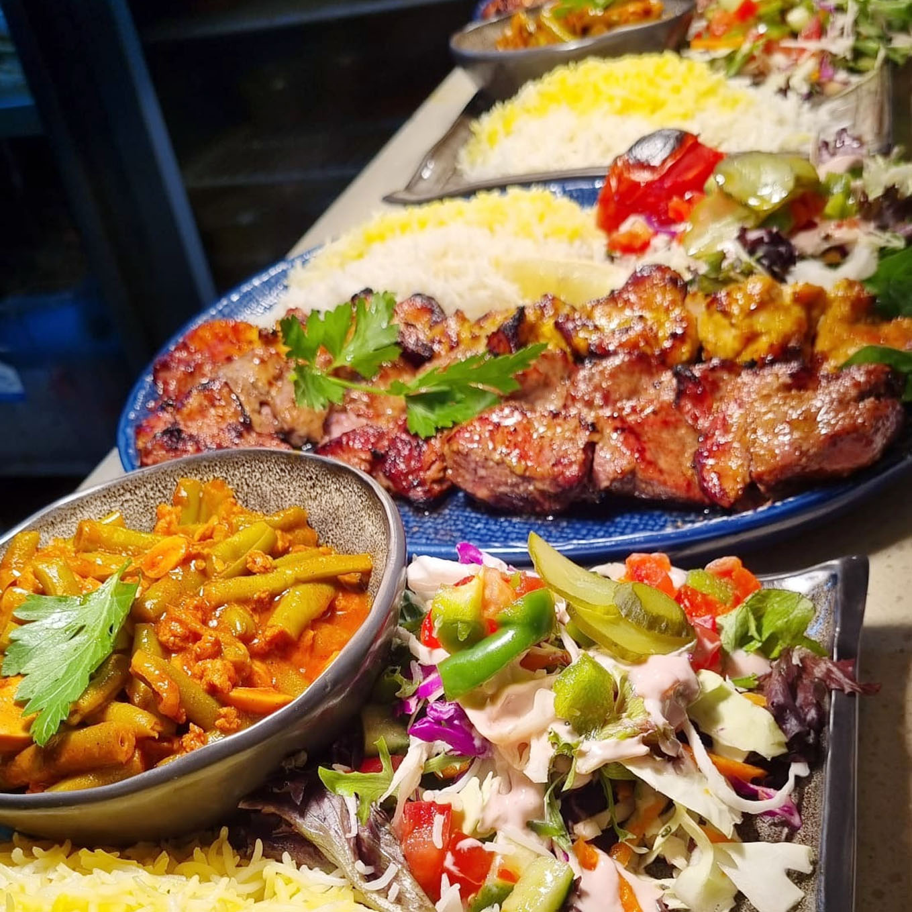
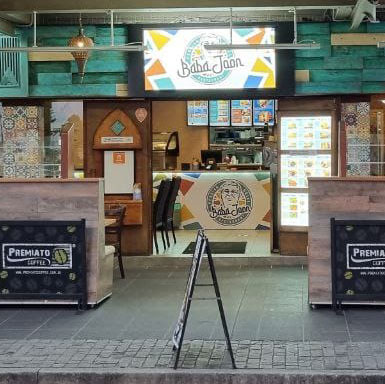
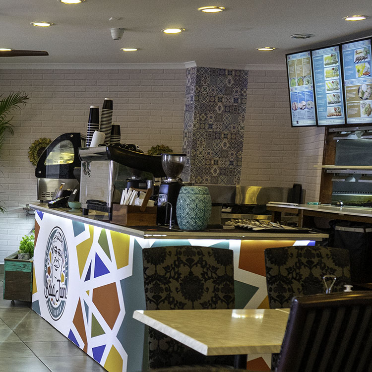
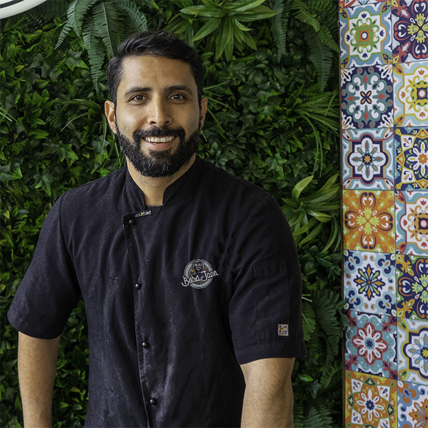
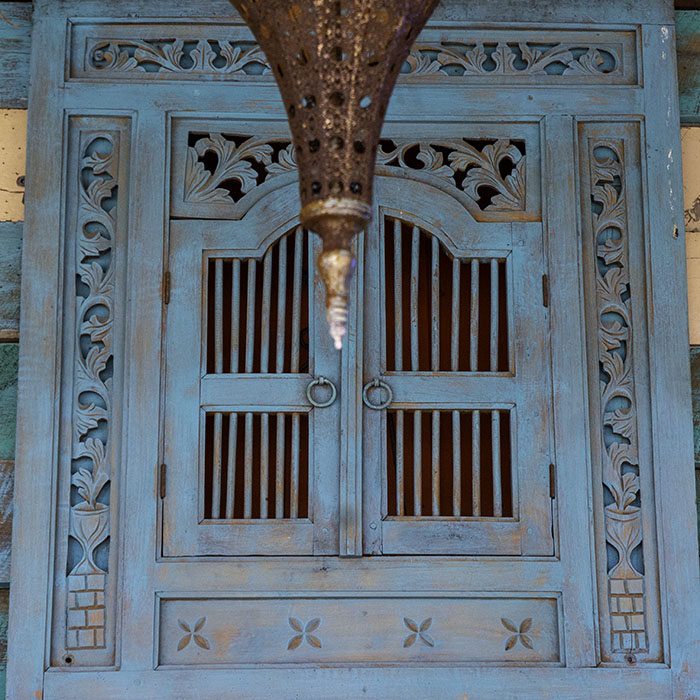
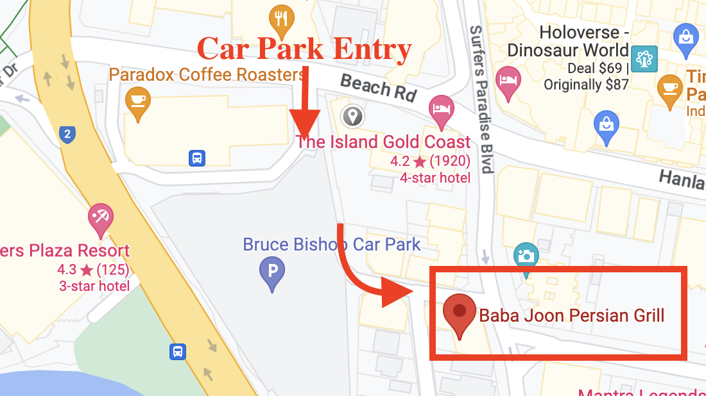

BABA JOONOur goal is to serve mouthwateringly delicious food to everyone that comes through our doors!
We welcome you to our restaurant and invite you to make yourself at home. Here you can book a table or order authentic, homecooked Persian food to takeaway. Celebrating an event? We'd love to welcome you and your guests for your special day.
Our family has been in the restaurant business for a very long time. Nowadays we can proudly boast our reputation for a well known Persian restaurant in our area. We are famous for fabulous authentic cuisine, professional chef and dedicated staff.



Coming to us for a lunch or a dinner should feel just as comfortable, as having one at home.
Event-Friendly
If you're considering celebrating a personal or a business occasion at our restaurant, all of our inside and outside tables, including 80 chairs, will be ready for you!
In Baba Joon, our team is like family. We feel that the restaurant atmosphere is just as important as our delicious menu.




High class restaurant service
16 August, 2022
SPECIAL RESTAURANT WITH PERSIAN FOOD ITEMS
16 August, 2022
HIGH CLASS RESTAURANT SERVICE FOR YOUR HEALTH
Welcome to Baba Joon – Persian soul food. Chef Ardalan is an experienced Persian Chef on the Gold Coast. Living on the Gold Coast for the past 10 years, he has immersed himself in the hospitality industry where he fine-tuned his specialty dishes in a local Persian restaurant. His love of Persian food from childhood and interest in blending ingredients from Iran inspired him to open his own restaurant right in the heart of Surfers Paradise.
